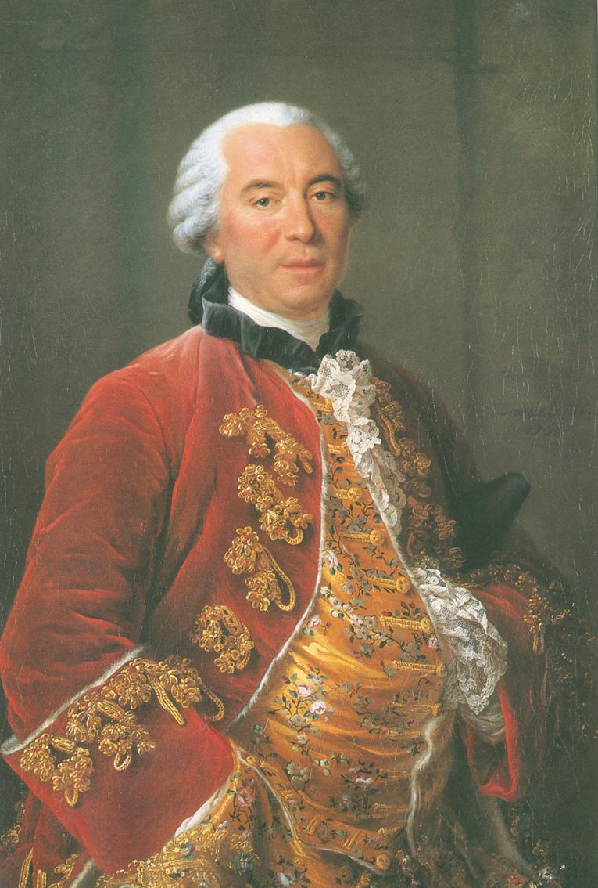
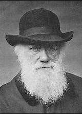
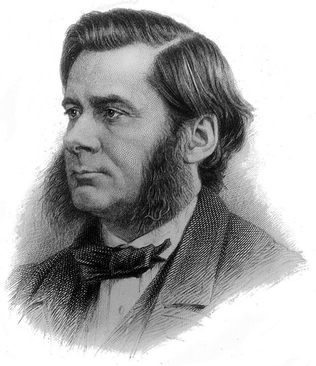

8) Evrim Teorisi
“Eski Antlaşma (Tevrat) parçalanmıştır; insanoğlu artık, kendisinden sadece şans eseri çıktığı evrenin acımasız enginliğinde tek başına olduğunu bilmektedir.”
Jacques Monod
vrim teorisi yeni bir görüş değildir. Eski Grekler de bu görüş üzerinde spekülasyonlar yapmışlardı. M.Ö. 6. yüzyıl gibi eski dönemlerde bile Miletos’lu Anaksimandros insanın ve diğer kara hayvanlarının denizden çıktıklarını öne sürmüştü. 2400 yıl sonra Hooke, Goethe ve “meşhur” Charles Darvin’in büyükbabası Erasmus Darvin bu fikir üzerinde durdular. Erasmus Darvin şu şiiri kaleme almıştı:
Sahilsiz dalgaların ardında organik yaşam;
Doğmuştu ve okyanusun incilerle bezenmiş oyuklarında büyüdü
İlk formlar, henüz ufacıkken, gök küreye görünmeden
Kumda ilerlediler, ya da su kütlelerini delip geçtiler;
Nesiller peş peşe üredikçe,
Bu formlar yeni yetenekler kazandılar, daha büyük uzuvlara sahip oldular,
Bu yüzden sayısız bitki topluluğu,
Ve nefes alabilen, yüzgeçli, ayaklı ve kanatlı pek çok canlı ortaya çıktı. (Clark 1977:25)
Evrim görüşü 1748’de gösterişli başlığıyla Telliamed, or the World Explained: Containing Discourses between an Indian Philosopher and a Missionary on the Diminutioin of the Sea, the Formation of the Earth, the Origin of Man, etc. (“Telliamed, ya da Dünyanın İzahı: Hintli bir filozofla bir misyonerin arasında suların çekilmesi, dünyanın oluşumu, insanoğlunun kökeni vb. hakkında söylevleri”) kitabının gün ışığına çıkmasıyla beraber yeniden güç kazandı. Kitabın Telliamed adında, “Doğulu, bilge bir kişi” tarafından yazıldığı öne sürülüyordu. Daha sonra bu ismin eski Fransa başkonsolosu Benoit de Maillet’in (1659-1738) tersten yazılmış olan ikinci ismi olduğu anlaşıldı. Kitabın içeriğinde bulunan bazı şeyler gerçekten hayal ürünü olsa da, Aydınlanma filozofları üzerinde belirli bir etki bırakmıştır.
Telliamed Hristiyanlığın öğretişlerini eleştiriyordu; örneğin madde ve hareketin başlangıçı görüşünü reddediyordu. Ona göre Yaratılış bölümündeki “yaratmak” sözcüğü “yapmak” ya da “şekil vermek” olarak çevrilmeliydi. Çünkü madde sonsuzlukta var olmuştu ve sonsuzluktan beri hareket halindeydi. Başka bir deyişle Telliamed’in evreni sürekli bir gelişim içerisindeydi. Dünyanın bazı aşamalardan geçtiğini kabul etti: Bir zamanlar denizler dünyayı tamamen kaplamıştı, daha sonra suların çekilmesi, bitki örtüsü, hayvanlar ve son olarak da insanların ortaya çıkmasını sağladı.
Bu “bilge adam” Nuh Tufanı gibi tek bir doğal afetin sedimantasyon (çökelme, tortullaşma) sürecini, dağların içerisindeki deniz kabuklarını, ya da fosiller ve minerallerin katmanlaşmasını açıklayabileceğine inanmıyordu. Fakat en çok tepki çeken, bu “bilge adamın” kara hayvanlarının nasıl ortaya çıktıkları ile ilgili açıklamasıydı. Her şeyden önce, hayvanların yaratılması ile ilgili Kutsal Kitap’ta yer alan anlatımları, hayvanların altın bir zincir ile gökyüzünden sarkıtılarak indirildikleri putperest hikayelere benzetti. Daha sonra, eski Anaksimandros gibi, insanoğlunun ve kara hayvanlarının denizden geldiklerini öne sürdü, doğrudan yaratılmayı reddetti. Dünyanın doğal nedenlerle şekillenmesi gibi, yaşayan türler de basit türlerden daha karmaşık olanlarına doğru yavaş yavaş gelişmişlerdi.
Evrim görüşü yayıldıkça, bilim adamları bu teoriyi temellendirebilmek için deneysel kanıtlar aramaya başladılar. Fransız doğacısı ve Kraliyet Botanik Bahçeleri’nin müdürü olan, George Le Clerc, Comte de Buffon (1707-88), Historie Naturelle’ (“Doğa Tarihi”) (1749) ve Epoques de la Nature’nin (“Doğanın Evreleri”) (1778’de) yayınladı. Kitapları doğa bilimcilerine bir ilham kaynağı olması, teologları oldukça çok kızdırdı.
Buffon, Descartes’inkinden daha farklı kuramsal bilgiyle yola çıktı. Hatırlayacağınız gibi Descartes çıkardığı sonuçlardan elde ettiği belitlere (aksiyomlara) bağlı kalıyordu. Kendisine göre, matematik belitleri Tanrı’nın kendisinin teminat altına aldığı doğrulardı. Fakat Buffon, belitlerin sadece insan zihninin keyfi ürünleri olduğunu kabul etti. Matematiğin bilgiye ulaşmak için bir temel olduğunu reddederek, bilimin, doğal olayların sık sık incelenmesiyle elde edilebilecek sonuçlara dayanması gerektiğini ısrarla savundu. Bilim, keyfi insan düşüncelerine değil, dikkatlice yapılmış gözleme dayanırdı. Gözlem, yüksek bir olasılığa sahip olup kesin olarak kabul edilmesi gereken sonuçlar verirdi. Sonuç olarak, bilgi, doğa kanunları gibi, bilimsel olarak gözlenebilen olayların kavranması ile sınırlıydı.
Maillet gibi Buffon da, jeolojik katmanların, dünyanın tek bir defada değil, daha uzun bir süreç içerisinde yaratıldığına inandı. Jeolojik katmanların oluşabilmesi 75,000 yıl ile 3 milyon yıllık bir süre gerektirdiğini hesapladı; bu süre Yaratılış kitabında anlatılan dünyanın yaşı ile ilgili öğretiden çok daha uzundur.
Buffon, dünyada yavaş yavaş gelişen çağların, fosil kayıtlarının incelenmesiyle anlaşılabileceğini öğretti. Yaşamın kimyasal tepkimenin sonucunda ortaya çıktığını öne sürdü. Darvin’den farklı olarak, basit yaşam formlarının daha karmaşıklarının ortaya çıkmasına neden olduğunu kabul etmedi, türlerdeki farklılığın, çevresel değişimlere karşılık oluştuğuna da inanmadı. Buffon’a göre, asıl yaşam molekülleri doğrudan, daha karmaşık hayvan formlarının oluşmasına neden olmuştu.
Buffon’un emin olabileceğini hissettiği tek şey, doğanın gözlenebilen kuralları olduğu için, ahlaki doğrularla ilgilenmeyi reddetti. Ona göre ahlaki doğrular, daha keyfi olgulardı. Doğanın insan hakkında öğrettiği tek doğru, hayvanlarla aynı sınıfta değerlendirilmesi gerektiğiydi.
Doğal olarak, Buffon tanrıbilimciler tarafından eleştirildi. Hem Janseniuscular (muhafazakâr Katolik bir tarikat), hem de Paris Üniversitesi Teoloji Fakültesi evrenin oluşumuyla ilgili görüşüne ve matematiği gözardı etmesine karşı çıktılar. Sonuç olarak matematik gözardı edildiğinde, herhangi bir şeyin doğruluğundan emin olmak imkansızdı. Eğer bir artı bir mutlak bir doğru olmaktan çıkarsa, her şeyin de göreceli olması mümkündü, bu nedenle mutlak ahlaki değerler de yavaş yavaş zarar görürdü. Bu mutlak doğru kavramının yok olacağı düşünüldü (Janseniuscular’ın görüşü 20. yüzyılda matematikçi Kurt Gödel tarafından çürütüldü).
Fakat evrim ile ilişkilendirilen isim her zaman İngiliz bilim adamı Charles Robert Darvin (1809-1882) olmuştur. Bütün canlı türlerinin yavaş bir doğal seçim sürecinden geçtiği görüşü, bilim çevresinde büyük bir etki yarattı, öyle ki evrim teorisi bazen Darvincilik olarak adlandırılır.
Darvin, Cambridge Üniversitesi’nden 1831’de mezun olmasının ardından, 22 yaşında iken İngiliz araştırma gemisi HMS Beagle’da, gönüllü doğa bilimcisi olarak dünyanın çevresinde dolaşmak için bulundu. Bu fırsat, Darvin’in farklı jeolojik türleri, fosilleri ve dünyanın farklı bölgelerinde yaşayan pek çok farklı organizmayı incelemesini sağladı. Örneğin Galapagos adasında birbiriyle benzer kuş türlerinin ve kaplumbağaların farklı alışkanlıklarını incelemesi, benzer fakat farklı hayvan türleri arasındaki ortak noktaların üzerinde durulmasına neden oldu.
1836’da İngiltere’ye dönmesinin ardından Darvin türlerin değişkenliği ile ilgili bazı teorilerini Notebooks on the Transmutation of Species (Türlerin Transmutasyonu Üzerine Notlar) adlı kitabında bir araya getirdi. Fakat Darvin’in doğal seçim teorisi tam olarak İngiliz papaz ve ekonomist Thomas Robert Malthus’un An Essay on the Principle of Population (1798) (Popülasyon İlkesi Üzerine bir İnceleme) adlı yapıtını okuyuncaya kadar şekillenmemişti.
Malthus insan popülasyonunun nispeten değişmediğini açıklamaya çalıştı. Çünkü yiyecek miktarındaki artış, popülasyonda ortaya çıkan artış ile doğru orantılı değildi. Bu nedenle nüfusun artması kıtlık ya da salgın hastalık gibi doğal yöntemler ya da savaş gibi toplumsal olgular tarafından kontrol altına alınmış oluyordu. Darvin, Malthus’un bu iddiasını hayvanlara ve bitkilere uygulayarak, doğal seçim ile gerçekleşen evrim teorisine ulaştı.
1858’de teorisinin ana hatlarını tek sayfalık bir makale halinde açıkladı. Ertesi yıl On the Origin of Species (Türlerin Kökeni) adlı ünlü yapıtıyla bu teoriyi detaylı şekilde yayınladı. Kimileri bu kitabı “dünyayı sarsan kitap” olarak adlandırdı, yayınlanmasının ilk gününde satışı tükendi.
Doğal seçimin meydana getirdiği evrim teorisi, gerçekte, Malthus’un tanımladığı besin kaynağı sorunu nedeniyle, yaşayan türlerin hayatta kalmak için mücadele etmeleri gerektiğini kabul eder. Üreyebilecek kadar uzun süre hayatta kalmayı başaranlar biraz daha iyi doğal avantajlara sahip olanlardır. Bu avantajlar bir sonraki nesle kalıtımsal olarak geçer. Böylece her nesil, çevresine bir önceki nesilden biraz daha iyi uyum sağlamış olur. Bu yavaş ve kesintisiz süreç (doğal seçim süreci), nesiller devam ettikçe, türlerin evrimleşmesinin nedeni olur. Böylece Darvin ilk kez, bitkilerin ve hayvanların sergiledikleri özellikleri niçin geliştirdik-lerini düzenli, bilimsel bir şekilde taslak haline getirmişti (Brooke 1991:255-256). Darvin’in katkısı, evrimcilere uzun süre üzerinde durup inceledikleri, değişim içinde olan bir mekanizma sunmuş olmasıdır. Bu da bu hipotezin daha akla yatkın hale gelmesine neden olmuştur.
Zaman içerisinde yavaş yavaş gelişmekte olan doğal süreçlerin canlı türlerini oluşturuyor olması, insanoğlu-nun Tanrı’nın benzeyişinde özel olarak yaratıldığı öğretisini inkâr ederek insanları hayvanlarla aynı seviyeye koyuyordu.
Darvin’in teorisiyle ilgili tartışmalar sonraki altmış-yetmiş yıl boyunca devam etti. Darvin’in hipotezini ispatlayamayacağı, çeşitliliğin kökenini ve sonraki nesle nasıl geçildiğini (modern genetiğin gelişmesine kadar cevaplanamayan bir itiraz sebebi olarak kalmıştır) açıklayamayacağı iddia edildi. Darvin’in görüşlerine karşı tepkiler, bilim kurumundan çok, din kurumundan geldi. Darvin, doğal seçimi sanki tanrısal bir gerçekmiş gibi, kendini haklı göstermeye çalışarak yazmakla suçlandı:
Doğal seçim bütün dünyayı, her değişikliği, en küçüğünü bile, her gün ve her saat inceler; kötü olanı reddeder ve iyi olanı korur ve dahil eder; olanakların elverdiği zaman ve mekanda, organik varlıkların organik ve inorganik yaşam koşullarına göre, sessiz ve ince bir şekilde çalışır. Zaman çok uzun devirlere izlerini bırakmadığı sürece, gelişmekte olan küçük değişimlerden hiçbirini göremeyiz. Geçmiş jeolojik devirlere bakışımız o kadar eksiktir ki, yalnızca canlı formlarının şu anda, daha önce olduklarından farklı durumlarını görürüz (Darwin 1979:133).
Uzun çağlar boyunca faaliyette olan ve bütün oluşumu, her yaratığın yapısını ve özelliklerini, katı bir şekilde inceleyen –iyi olanı tercih ederek kötüsünü reddeden– bu güç nasıl sınırlandırılabilir? Her yaşam formundaki en karmaşık ilişkilere, yavaş ve güzel bir şekilde uyarlayabilmek için bu güç sınır tanımaz (1979:433).
19. yüzyıl aydınları, doğal seçimin Hristiyan teolojisiyle bağdaştırılmasının mümkün olup olamayacağı sorununa çok farklı şekillerde yaklaştılar. Tanrıbilimci Charles Hodge gibi kişiler, Darvin’in teorisinin ateist bir görüş olduğunu öne sürdüler. Diğerleri ise Darvinciliğin daha muazzam bir yaratılış görüşü olduğuna inandılar, bazıları ise “varyasyonun” ilahi taktir tarafından yönetildiğini kabul etti (bu düşünce boşlukların tanrısı, görüşünün farklı bir hali olarak eleştirilmiştir. İnsan kabiliyetinin yetersiz kaldığı yerde Tanrı’ya başvurulması, varyasyonların nedenleri keşfedildiğinde ise reddedilmesi).
Asıl mesele, insanın “Tanrı’nın benzeyişinde” yaratılıp yaratılmadığı ya da –ahlak “maddesel kanıt” bırakmadığı için–direk olarak gözlemlenemeyen insanın ahlaki doğasının, doğal seçim aracılığıyla evrimin sonucu olup olmadığıydı (yani, insanın ahlaksal yapısı jeolojik/paleontolojik malzemenin yorumlanmasıyla açıklanabilir miydi?). Bazıları ise temel zihinsel yetenekler ve önemsiz zihinsel yetenekler arasında bir ayırım yaptılar: Örneğin müzik yeteneği, sanatsal ve matematiksel yetenekler az bulunurlar ve bu nedenle hayatta kalmak için gerekli değildir. Dolayısıyla doğal seçim süreci ile gelişmezler (Clarke 1977:103-133).
Belli ki, daha önceki teoriler, Darvinizmin ortaya çıkmasına neden olan maddesel kanıtların yorumlanmasında büyük bir rol oynamıştır (bu durum hâlâ geçerliliğini korur): İmanlılar Tanrı’nın madde ve yaşam yarattığına ve tertip ettiğine inanırken ateistler maddenin kendi kendisini yaratıp sistematize ettiğine inanırlar.
Darvin 1830’larda Hristiyanlık inancını bırakarak bir süreliğine deizme döndü. 1844’de şöyle demiştir “Maddenin yaratıcısı tarafından konulduğunu farz ettiğimiz kurallarla uyum içerisindedir, formların üremeleri ve yok olmaları, bireylerin doğumu ve ölümü gibi, ikincil nedenlerin sonucu olmalıdır. Evrenin Yaratıcısı’nın Kendi iradesi uyarınca, sayısız sürüngeni, kurtçukları ve parazitleri yaratması küçültücü bir durumdur.” Fakat daha sonra, doğada herhangi bir tasarım olduğu görüşünü reddetti. “Madde üzerine kurallar koyan Yaratıcı”, “doğa kurallarına” indirgenmiş oldu. Darvin tasarımın, “bütün teorisini yıkan şey” olduğunu söyledi çünkü “her varyasyonun Tanrı’nın lütfuyla düzenlenmiş olduğu görüşü… doğal seçimi tamamen gereksiz kılıyordu; gerçekte yeni türlerin ortaya çıkışını bilimin ilgi alanından tamamen uzaklaştırıyordu” (Brown 1986 Darvin’in dine olan değişken tutumunu açıklıyor).
Darvin aslında, teorilerinin sınırlı olduğunun farkındaydı. Teorilerini, kullanılmasıyla, ilerideki değişimlerin tahmin edilebileceği tümdengelim sistemi olarak görmedi; aslında geçmişi yeniden düzenlemek için kullanılabileceğini bile düşünmedi. Herbert Spencer’in “sosyal Darvinizm” görüşünü kötüledi, Karl Marx’ın kendi teorilerini sosyal gerekircilik için kendisine mal etmesini ve kendi savları üzerine abartılı yapılar kurmaya çalışan diğerlerini hoş görmedi (Bkz. Brooke 1991:275-320).
Daha sonraki yıllarda teorisini pek çok kitapta ayrıntılı bir şekilde ele almaya devam etti, bu kitaplardan bazıları The Variation of Animals and Plants Under Domestication (Evcilleştirilen Hayvan ve Bitkilerin Değişimi) (1868), The Descent of Man (İnsan Soyu) (1871), ve The Expression of the Emotions in Animals and Man (Hayvanlar ve İnsanlarda Duyguların İfadesi) (1872)’dir. Bilim Derneğine ve Fransız Bilim Akademisi’ne kabul edildi, 19 Nisan 1882’de öldüğünde, Westminster Katedralı’na gömüldü.
Darvin’in teorisinin yaygın başarısı bir dereceye kadar Thomas Henry Huxley (1825-1895) ve Herbert Spencer’in (1820-1903) etkinlikleri sayesi-nde oluşmuştur. Huxley evrimi duyurmak için mümkün olan en büyük dinleyici kitlesine ulaşmayı amaçladı. Maymunlar hakkında mümkün olduğunca çok şey öğrenerek; insan kafatasını orangutanların iskeletiyle, babunları gorillerle karşılaştırarak hazırlandı. Örneğin: Örangutan ayağının goril ayağına olan farkın, insanınkine olandan fazla olduğunu gösteren çizelgeler hazırladı. “Kafatası hacmi yönünden bile”, “insanların birbirlerinden, maymunlarla olduğundan daha çok farlılık gösterdiklerini” yazdı. Spencer, doğanın kendi gidişatına bırakılması gerektiğini kabul etti. Bu da yoksulları koruma kanununa, devlet okullarına ve konut reformuna karşı çıkmasına neden oldu. “Yaşam mücadelesi” ve “doğal ayıklanma” (seleksiyon) herkesçe kullanılan terimler arasına girdi.
Huxley’ye göre insanoğlunın gelişimi

Darvinizm’in uzun süre etkisini koruması, uzun vadede, birilerinin doğa bilimcilerinin ciddiye aldıkları türlerin kökeniyle ilgili bir açıklama sunmasına bağlıdır. Çoğu deneysel veriden yoksun olsa da, Darvin’in teorisi, kolayca bir kenara bırakılamayacak kadar çok şeyi açıklıyor görünmekte. Oldukça programlı ve paleontolojinin gerçeklerini de içine alabilecek kadar çok yönlüdür. Fakat Evrim Teorisi’nin en büyük sorunlardan biri, bu teorinin hayatın farklı biçimlerini açıklamakta yeterli olmadığı düşüncesi: Herhangi iki yaşam formunun ortak bir ataya sahip olduğu görüşü evrimsel hipotezin sonucudur.
Son olarak, Darvinizm’in yayılmasını ve etkisini ele alırken, dikkat edilmesi gereken başka bir nokta daha vardır: Genellikle bilimsel görüşlerin bilimdışı amaçlara hizmet ettiği varsayılır. Çeşitli alanlardaki “uzmanlar” Darvinizm’i biyolojik temellerinden ayırmışlardı ve yeni ortaya çıkan sosyal, ahlaki, siyasi, dini tavır ve ideolojileri doğrulamak için başvurdular. Karl Marx, Darvin’in kendisi için sınıf çatışmasıyla ilgili bilimsel bir temel oluşturduğunu öne sürdü, diğer yandan Amerikalı sosyolog William Graham Sumner “en iyi uyum sağlayanın hayatta kalması öğretisini” sosyalizmin yanlış yönlerini ortaya koymak için kullandı (eğer en iyi uyum sağlayan hayatta kalıyorsa, siyasi girişimler doğa kanununu ihlal eder ve böylece zayıflığın korunmasına neden olur). Herbert Spencer, Darvin’in ilerleme içerisinde olan çevreye uyum süreci görüşünü, kötülük ve ahlaksızlığın düşmüş bir dünyanın kendisinde var olduğunu kabul etmeyen, bunları geçiçi bir zorluk olarak gören ahlaki bir teorinin gerekçesi olarak kullandı: İnsanın bencilliği, hayvani geçmişinin kalıntısıdır; insanoğlu kendisini çevreye adapte ettiğinde, kötülük yok olacaktır. Josiah Strong ırkçılığı desteklemek için yaşam mücadelesi görüşüne başvurdu (Anglo-Saxon ırkının gücü ve başarısı, ırklar arası mücadelede sahip oldukları kendilerine özgü üstünlüğün kanıtıydı). Bunlar gibi ırkçı düşünceler 19. yüzyıl emperyalistleri, Hitler, ve modern, sağ kanat gruplar tarafından yönlendirildiler.
Kısacası, 19. yüzyılın sonu ve 20. yüzyılın başında, birçokları, insanlığın Adem’le beraber günaha düşüşü sonucunda ortaya çıkan kalıtsal günah ve günahkârların cezalandırılması gibi öğretileri nahoş bularak, Darvin’i Hristiyanlığı kötülemek amacıyla kullandılar. Yani, Yaratılış’ın tarihsel özelliği sorgulanırken, insanın düşmediği, aslında yükseldiği görüşünü onaylamak için Darvin’in görüşlerine başvuruldu. Doğal olarak, Darvin bir süre sonra Hristiyan karşıtı (özellikle Katolik-karşıtı) propagandasıyla ilişkilendirilmeye başlandı. Bununla birlikte Hristiyanlığın umudu, doğa şeçimde değil, İsa’nın kurtaran etkinliğindedir. İnsanın düşüşü, açıkça evrimsel düşüncenin iyimser bakış açısıyla uyuşmamaktadır.
Darvin Hristiyanlığa hiçbir zaman kasten saldırmadı. Aslında, Darvin’in asıl düşüncesi doğadaki düzenin arkasında akıllı bir tasarımcının olması gerektiğiydi. 1873’te Hollandalı bir öğrenciye şunları yazdı: “Bu muhteşem ve şaşılası evrenin şans eseri ortaya çıktığını düşünmemizin mümkün olmayışının bana göre Tanrı’nın varlığının en temel kanıtı olduğunu söyleyebilirim; fakat bu iddianın gerçek bir değere sahip olup olmadığına karar veremedim” (Bkz. Brown 1986:31). Darvin’in, kendisine her zaman bağlı olduğu karısı Emma, ömrünün sonuna kadar Hristiyan olarak kalmıştır (:35-46).
* * * *
Bilim pek çok kişinin imanını sarsmış olsa da, ve toplumun dünyasallaştırılması (laikleştirilme süreci) amansız bir şekilde devam etse de, batı Hristiyanlığı’nın, Darvinizim’den ötürü ve bilimsel buluşların yarattığı baskı nedeniyle gerilediği görüşü, bütünüyle savunulabilecek bir düşünce değildir. Türlerin Kökeni’nin yayınlanmasına tanık olan 1859 senesi, aynı zamanda Amerika ve Britanya’da ruhsal uyanışlara da tanık olmuştur. Bazı nedenlerden ötürü kilisenin müjdesel (misyonerlik) etkinliği 19. yy. bilim ortamından büyük ölçüde etkilenmemiştir. Bunun sebebi, bir dereceye kadar Victorya dönemi Britanya’sının sosyal bölünmeleri olabilir–çünkü Darvinizm’i mantık dışı olarak görüp reddeden, düşünceli pek çok Hristiyan’ın yanı sıra, hayatlarına doğrudan etki etmediği için konuyu bütünüyle gereksiz gören pek çok kişi de vardı.
Ne olursa olsun, Hristiyanlığın Batı dünyasının o zamanki sosyal durumunda meydana gelmesi kaçınılmaz olan gerileme, dünya çapında kilisenin yeniden canlanmasıyla dengelenmiş oldu. David Livingstone, Hudson Taylor, Adoniram Judson, C. T. Studd ve yüzlerce “üst tabaka” üniversite mezunlarının –yani Darvin’in öğretilerinden en çok etkilenen insan grubunun– 19. yüzyılın büyük misyonerlik hareketinin öncüleriydi. Evrim teorisiyle başlayan 19. yüzyıl, ilk yüzyıldan beri Protestan Kilisesi’nde gerçekleşen en önemli büyümeye tanık olduğu çağ oldu.
Evrim ve yaratılış öğretisi tartışmasının halka yansıdığı son önemli olay Dayton, Tennessee’de gerçekleşen 1925, Scopes duruşmasıdır. Bu duruşmada John Thomas Scopes adındaki bir lise öğretmeni, Kutsal Kitap’la ters düşen öğretileri yasaklayan Tennessee yasasını çiğneyerek evrim teorisini öğretmekten suçlu bulunmuş ve 100 $ tutarında bir cezaya çarptırılmıştı. Bu dava kamuoyunu yakından ilgilendiriyordu, böyle olmasının tek nedeni söz konusu olay değil, radikal dinci bir Amerikan siyasi lideri, konuşmacı ve gazete editörü olan William Bryan Jennings’in ikinci bir savcı rolü oynamasıydı. Bu davayı Jennings kazanmış olsa da, kendisinin bilimsel gelişmelerden habersiz olduğunu gösteren küçük düşürücü bu sorgulama, şüphesiz radikalizme dincilik akımına zarar vermiştir. (Muhtemelen, dava sonuçlanmasından beş gün sonra gerçekleşen ani ölümünde de payı vardır). Kökten dinci Hristiyanlık, o günden sonra entellektüelizm ve bilim karşıtı olarak nitelendirilmeye başlanmıştır.
Kutsal Kitap’a dayalı yaratılış öğretisi günümüzün bilimcileri tarafından genellikle ciddiye alınmasa da, küçük fakat adanmış bir grup “Yaratılış Bilimcileri” Kutsal Kitap’ta yer alan Yaratan Tanrı öğretisini savunmaya devam etmektedirler. Yaratılış öğretisini savunanlar işleyişten çok anlam sorununa odaklanarak, evrim teorisindeki mantıksal ve fiziksel boşluklara parmak basarak, Tanrı’yı, hem olağanüstü, hem de sıradan olan şeylere egemen Tek varlık olarak Kutsal Kitap temelinde tasvir ettiler. Bilimin sunduğu evrenle ilgili “kapalı kutu” yaklaşımına felsefi açıdan, zaman ve mekân ile ilgili bazı enteresan argümanlar sunarak, çürütmektense, gözardı edilmesi daha kolay olan birçok kanıt topladılar. Fakat kurdukları düzenin bilgi kuramsal temelinin daha üstün olmasına rağmen (bu konuya Science, Faith and Society (Bilim, İnanç ve Toplum)’nin yazarı Michael Polanyi’nin de dikkatini çekmiştir) çağdaş bilimi çok sınırlı bir ölçüde etkileyebildiler.
Polanyi’nin dikkat çektiği nokta bilimin daha çok öznel olması, bilim adamlarının ise göründüklerinden daha sezgisel davranmalarıydı. Dahası, bilimin gerçekte dini bir dünya görüşünün, özellikle de Hristiyanlığın uzantısı olduğunu kabul etti. Polanyi’e göre dünyaya, “orada” olan, yani bireylerin ötesinde ve bulunmayı bekleyen “aşkın doğru” düşüncesini veren şey din idi. Polanyi, zaman içerisinde bilimin, Tanrı merkezli bir bilgi kuramına yöneleceğini bekliyordu.
20. yüzyıla kadar mekanik ve biyolojik bilimin, var olan her şeyi açıklayacağına inanılmıştı: Her şeyin kesin açıklamasının sadece zamana bağlı olduğu düşünülüyordu. Fakat daha sonra bu görüş güvenilirliğini yitirdi. Bilimin ölümcül yan etkileri–nükleer silahlar, kirlilik, doğal kaynakların dengesinin bozulması, v.s… Ahlaksal, çevresel ve siyasi konularda ciddi kaygılar uyandırdı. Bilim, temelde insanların yararına bir olgu olarak anlaşılmaktan çıkmıştı. Bunun yerine evrenin yok oluşuna giden yolun başlangıcı oluvermişti. Bilim adamları soruların yanıtlarını en tuhaf yerlerde el yordamıyla aramaya başladılar: Firitjof Capra adında bir fizikçi bilimsel olmayan, Yeni Çağ fikirlerini, günümüzde fiziksel kurallar temelinde yaymaktadır!
Doğu dünya görüşünün temel unsurları, aynı zamanda modern fizikten elde edilen dünya görüşleri arasındadır… Doğu düşüncesi (daha da genel olarak, mistik düşünce), çağdaş bilimin teorilerine tutarlı ve yerinde felsefi bir altyapı hazırlar. Çağdaş bilim, buluşların ruhsal amaçları ve dini inançlarıyla mükemmel bir uyum içerisinde olabileceğini gösteren dünya görüşüdür. Alt-mikroskobik dünyayı anladıkça, modern fizikçinin, doğulu gizemci gibi, dünyayı nasıl ayrılmaz, etkileşen ve sürekli devinen bileşenlerden oluşan, insanı da ayrılmaz bir parçası olarak içeren sistem halinde görme noktasına geldiğini daha fazla anlayacağız (Bkz. Chandler 1989:188).
Önceden dünyayı efsanevi unsurlardan ayırmak (demythologize) için kullanılan bilim, şimdilerde dünyasal bakış açısına efsanevi unsurlar katmak (mythologize) için kullanılmaktadır. Böylece kendimizi, bu kitabın teoloji bölümüne ulaştıran Yeni Çağ’da buluruz. Bilimin kendi istikbaline gelince bunu, Polanyi’nin haklı çıkıp çıkmadığını görünce anlayacağız.
Düşünün!
- Descartes belitlerin Tanrı’nın kendisinin teminat altına aldığı doğrular olduğunu kabul etti. Buffon ise dikkatlice yapılmış gözlemlerden çıkarılacak sonuçları önermelere tercih etti. Bu değişim teolojik ve ahlaki kavramlarını ne yönde etkileyecekti?
- Evrim Teorisi’ni Darvin oluşturmamıştır. Darvin’in esas katkısı neydi?
- Darvinizm, Kutsal Kitap’a dayalı yaratılış öğretisine, Kutsal Kitap’ın tarihsel yönüne ve insanın doğası ile ilgili öğretiye nasıl zarar vermiştir?
- Sosyal Darvinizm nedir?
- Darvin’in Kutsal Kitap’ın doğruluğuna zarar vermeye çalıştığı bir dönemde, Amerika ve Britanya’da meydana gelen uyanışları ve dünya çapındaki hizmette kaydedilen ilerlemeleri siz nasıl açıklıyorsunuz?
- Hristiyanlık bilim karşıtı mıdır?
- Kutsal Kitap’a dayalı Yaratılış öğretisini savunanların teorileri entelektüel açıdan yeterli midir?
- Modern fizik ve doğu mistisizmi arasındaki ilişkiyi açıklayınız.